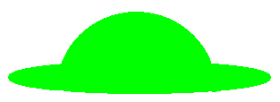

配合过渡、hover使用。实现元素位移效果
子绝父相水平居中案例:让子盒子在父盒子中水平居中(父子元素任意宽度下都能实现)
不能使用margin :0,auto;水平居中(只适用标准流)。
使用left:50%;
top:50%;正方向移动定位父级高度、宽度的一半。
margin-left:-父级宽度的1/2px水平居中;margin-top:-父级高度的1/2px垂直居中;或transform:translate(-50%,-50%);反方向位移父级宽度和高度的一半

转换原点位于右上角,根据原点进行旋转
多重转换:向右位移300像素,放大原来的1.5倍,并旋转360度
是多个颜色逐渐变化的视觉效果,用于设置盒子的背景。
工作中常用半透明渐变:transparent,rgba()
实现元素缩放效果,改变盒子大小,超出不占位、缩小空隙部分占位
沿x轴方向旋转,正数向里旋转,负数向外旋转
沿y轴方向旋转,正数向左旋转,负数向右旋转